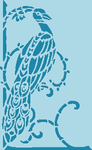

| Проектное задание по дисциплине "Основы алгоритмизации и программирования" | Массивы | Тест |
Проектное задание
на тему:
Массивы

Массив -
последовательность, состоящая из одного или более символов
индексированный набор данных определённого типа
генератор случайных чисел
законченное действие
Определение одномерного массива имеет вид:
template <список_параметров_шаблона> определение класса
тип имя_массива[K1][K2]...[Kn]
тип имя_массива [константное выражение];
имя_класса (фактические_параметры_конструктора);
Укажите, пожалуйста, способ, с помощью которого можно инициализировать массив :
с клавиатуры
с телефона
с закрытыми глазами (для опытных программистов)
правильного ответа нет
В многомерном массиве используется сразу несколько индексов. Вопрос: сколько индексов имеет трехмерный массив?
Два
Десять
Один
Три
Многомерный массив в соответствии с синтаксисом языка есть
массив массивов, то есть массив, элементами которого служат массивы.
переменная, содержащая адрес некоторых данных, а не их значение.
переменная, изменяющаяся в цикле.
человек, компьютер, автомат, умеющий выполнять вполне определенный набор действий.
Определение многомерного массива имеет вид:
тип имя_массива [константное выражение];
int a, b, d;
тип имя_массива[K1][K2]...[Kn]
тип_результата имя_функции(список параметров, если он есть);
Общий объем памяти в байтах определяется выражением
sum = a + b++
y = e
x
N ++ (sizeof(тип))
N * (sizeof(тип))
В фрагменте программы
con
-
#define S 2
#define K 3
#define L 2
float
con
[S][K][L];
Размерность
Имя
Слово
Объем памяти
Количество измерений массива в языке C не ограничено, но имеется ограничение на
первый элемент массива.
некоторый объект.
общий размер массива.
тип данных элементов массива.
Последним элементом массива, использующимся для обозначения конца строки, является
\0
//e
\t
\n
О
главление
М
ассивы
П
римерам программ
Т
ест
И
сточники
С
оздатель